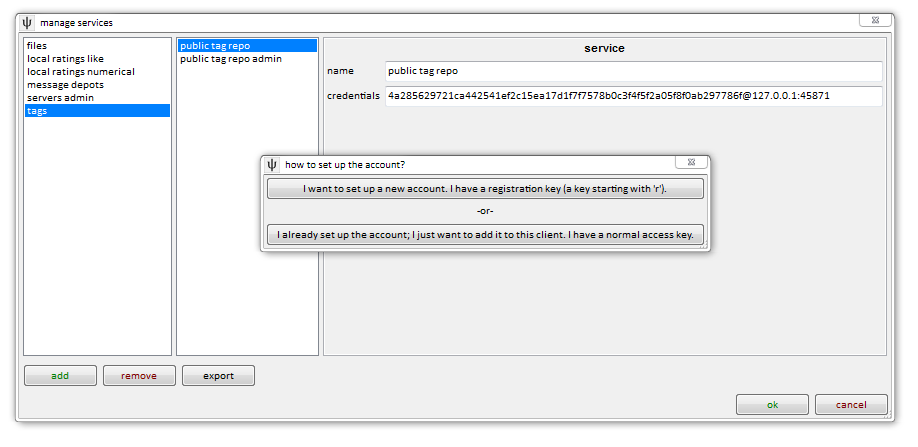

making new accounts
Although I hope you are now familiar with access keys, I have recently added registration keys.
These are generated as server admins create new accounts, and are sent to new users. They work only once: to retrieve a new account's access key. After this, they become useless. As a result, they are safer to email and otherwise distribute than access keys.
They look very similar to access keys; their only difference is they have an 'r' at the front, like so:
r606927ce4a91114ee81d169ca57ef53fd07c12e3732b01ebcb59ea03d7d5b46e
I am still developing how the gui handles these, but for now, the 'add' button on the add, remove or edit services dialog will now give you a simple new popup:

If you have a registration key, click above, and it'll give you a very simple form to fill in. If you have a normal access key, click below, and you'll be able to add the information manually as usual.
For instance, if you want to connect to my public tag repository as per here, this is an existing, shared account that has already been initialised, so you would click below.